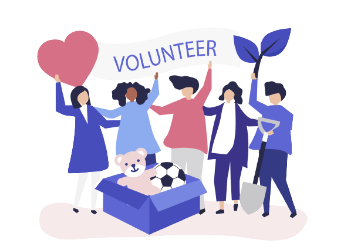

Helping others is thought to be one of the ways that people create, maintain, and strengthen their social
connections. For example, volunteering and helping others can help us feel a sense of belonging, make new
friends, and connect with our communities.
Donate Now
Donate today. Join with others to end the sufferings of needy people. They need your support.
Donating
never reduces your wealth. Rather it creates Humanity all over the world.
Other Amount (Taka)
Donate Now
To donate the amount we have collected, first we will go to the area. Then we will observe
and select a spot where will oragnise this event. We will announce the date and time so that people can hear
about the time. Finally, we will start donating.

In a disaster, most of the people die due to the scarcity of food. So our main
priority will be deliver
food to the needy one. Mainly we will use the donation to buy food and give them.

Giving shelter will be a bigger challenge but benefitted for those who
needs. It will help
the
homeless in more ways than you may realize and the more money that is given, the more services and help
can be provided.

We will oraganise education for children. For that we may need your donation. We will
buy books, pens,
pencils and essential education stuffs and give them so that they can continue their education.
Help other and make them feel safe
Volunteering can provide a healthy boost to your self-confidence, self-esteem, and life satisfaction.
You are doing good for others and the community, which provides a natural sense of accomplishment. Your
role as a volunteer can also give you a sense of pride and identity.
